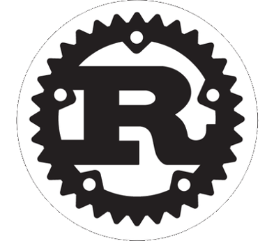
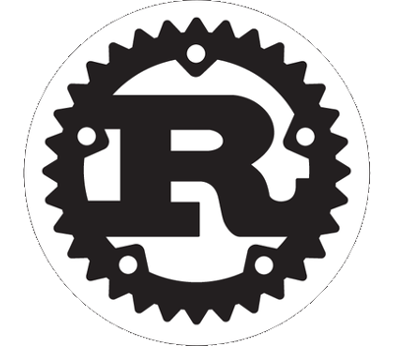

Rust from Ruby
TDC - POA
Falar de Rust em uma trilha de Ruby?
Legal mas:
- Eu já programo em ruby
- Ruby paga as minhas contas
- Eu gosto de ruby
E mesmo assim devo aprender Rust?

Motivo 1
"A language that doesn’t affect the way you think about programming is not worth knowing."
- Alan Perlis
Motivo 2
Rust é extremamente rápido.
~$ time ./helloworld [ruby-2.2.1]
Hello, world
./helloworld 0.00s user 0.00s system 66% cpu 0.003 total
Mesmo código em Ruby
~$ time ruby examples/ruby/helloworld.rb
Hello, world
ruby examples/ruby/helloworld.rb 0.04s user 0.01s system 94% cpu 0.045 total
"Não uso Ruby por ser rápido e se precisar de performance posso descer para C"

Então qual é o ponto?
Rails App
"Gostamos do Rails pois ele facilita nossa vida! Mas como lidar com uma aplicação monolitica?"
Rust as a service :P
Motivo 2
Muita gente massa do Ruby esta participando do Rust
Motivo 3
Toda a segurança e conveniência do Ruby em código nativo - wycat
Motivo 4
Você pode aprender muito como Ruby funciona através do Rust
Tentarei ensinar algo novo hoje! :)
 

Ruby to Rust
Semelhanças
words = ["Hello", "world", "from", "Ruby"]
words.each { |w| puts w }
fn main() {
let words = vec!["hello","word", "from", "Rust"];
for w in words {
println!("{} ", w)
}
}
O que é?
Rust é uma linguagem compilada, extremamente rápida, de tipagem estática e que foi projetada para garantir segurança, concorrência de forma prática
Ruby é lento, mas a gente ama ele mesmo assim.
<3
Porque a diferença?
Podemos aprender muito analisando Ruby e Rust
Como eles executam isso?
# code.rb
2 * 7 + 3
fn main() {
2 * 7 + 3;
}
Ruby

1 - Tokenizer


2 - Parse

3 - Compila para byte code
# code.rb
2 * 7 + 3
puts RubyVM::InstructionSequence.compile(code).disassemble
# == disasm: <RubyVM::InstructionSequence:<compiled>@<compiled>>==========
# 0000 trace 1 ( 1)
# 0002 putobject 2
# 0004 putobject 7
# 0006 opt_mult <callinfo!mid:+, argc:1, ARGS_SIMPLE>
# 0008 putobject 3
# 0010 opt_plus <callinfo!mid:+, argc:1, ARGS_SIMPLE>
# 0012 leave
Finalmente - Interpreta
Rust

Compilada
Mesmo código em Rust
fn main() {
2 * 7 + 3;
}
$ rustc code.rs
// assembly (Intel)
push rbp // bla bla bla stack suff
mov rbp, rsp
mov eax, 17 // O QUE IMPORTA: move 17 para o registro de retorno
pop rbp
ret // exit
$ ./code
https://godbolt.org/g/wPfcb6
Ruby - Classes
class Foo
def hi
"Hello"
end
end
f = Foo.new
f.hi

Rust - Strucs
struct Foo;
impl Foo {
pub fn hi(self) -> &str {
"Hello"
}
}
fn main() {
let f = Foo;
f.hi();
}
Compilando
Gera cerca de 80 linhas de assembly
Com otimização
Literalmente um programa vazio
Ruby - Modules - Mixins
module Greeting
def hi
"bar"
end
end
class Foo
include Greeting
end
f = Foo.new
puts f.hi
Rust - Traits
struct Foo;
trait Greeting {
fn hi(&self) -> &str;
}
impl Greeting for Foo {
fn hi(&self) -> &str {
"foo"
}
}
fn main() {
let f = Foo;
println!("{}", f.hi());
}
Ruby - Ducktype
class Foo
def hi
"foo"
end
end
class Bar
def hi
"bar"
end
end
def hello(f)
puts f.hi
end
foo = Foo.new
hello(foo)
bar = Bar.new
hello(bar)
Rust - Generics
struct Bar;
struct Foo;
trait Greeting {
fn hi(&self) -> &str;
}
impl Greeting for Foo {
fn hi(&self) -> &str {
"foo"
}
}
impl Greeting for Bar {
fn hi(&self) -> &str {
"bar"
}
}
fn hello<T: Greeting>(f: T) {
println!("{}", f.hi());
}
fn main() {
let bar = Bar;
hello(bar);
let foo = Foo;
hello(foo);
}
Monomorphisation
fn hello<T: Greeting>(f: T) {
println!("{}", f.hi());
}
fn main() {
let bar = Bar;
hello_bar(bar);
let foo = Foo;
hello_bar(foo);
}
Vale a pena aprender Rust
Ele faz você ver as coisas de outro modo.
Concorrência
words = ["Hello", "world", "from", "Ruby"]
words.map do |w|
Thread.new do
puts "#{w}"
end.join()
end
words = ["Hello", "world", "from", "Ruby"]
words.map do |w|
Thread.new do
words.push(" lol ")
puts "#{w}"
end.join()
end
use std::thread;
fn main() {
let words = vec!["Hello", "World", "From", "Rust"];
for w in words.clone() {
let _ = thread::spawn(move ||{
words.push(" lol "); // error: capture of moved value: `words`
println!("{}", w);
}).join();
}
}
O segredo do Rust é seu sistema
Ownership e Borrowing
Ownership
fn take(list: Vec<i32>) { println!("take {:?}", list); }
fn main() {
let a = vec![10, 5, 4];
let b = a; // Transfere o owner
let c = b; // Transfere o owner
take(c); // único valido
println!("{:?}", a); // ERRROUUU (Fausto Silva Voice)
}
Borrowing
fn take(list: &Vec<i32>) { println!("take {:?}", list); }
fn main() {
let a = vec![10, 5, 4]; // a (owner) entra no scopo
take(&a); // Empresta Ok
let b = &a; // Empresta
let c = &b; // Empresta
println!("{:?}", a); // Ok
println!("{:?}", c); // Ok
} // todas saem do scopo